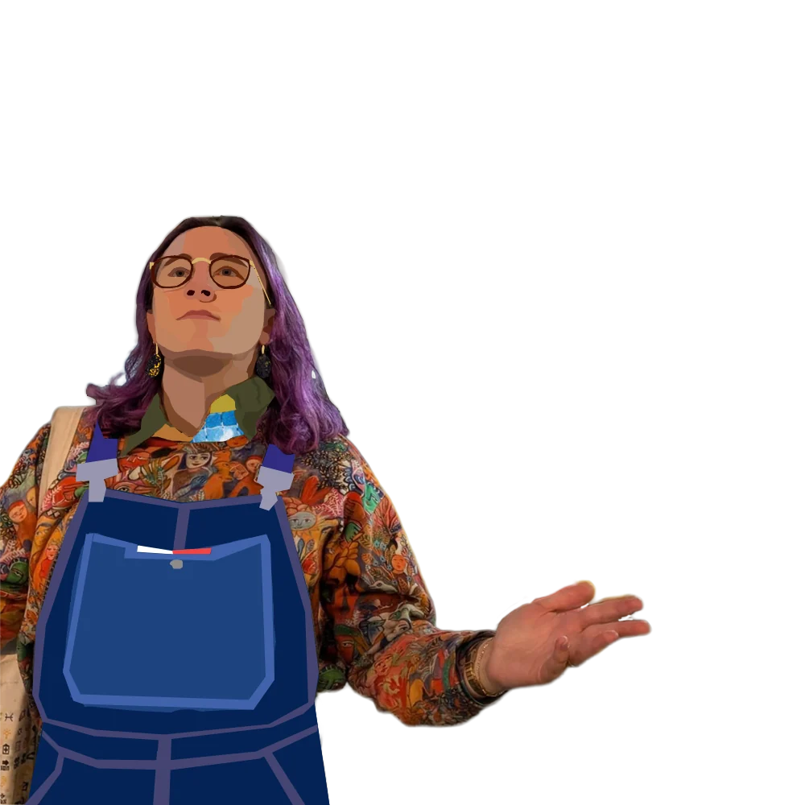
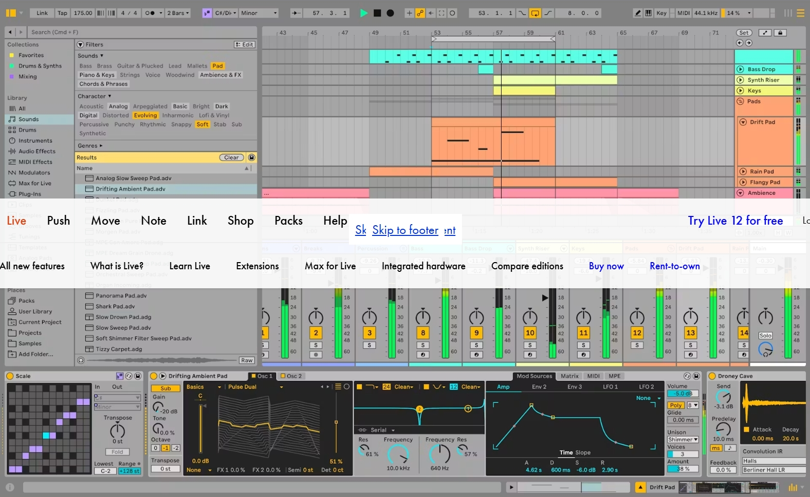
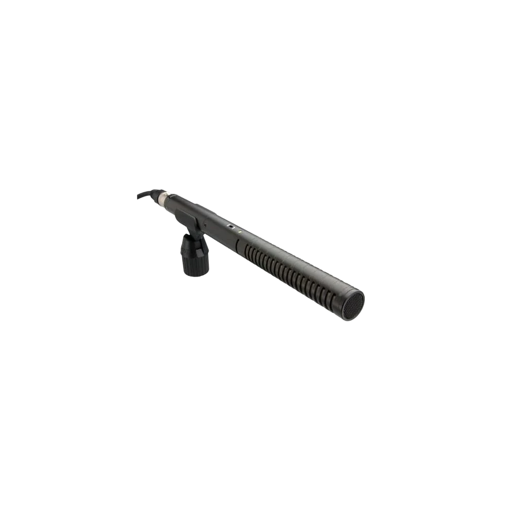
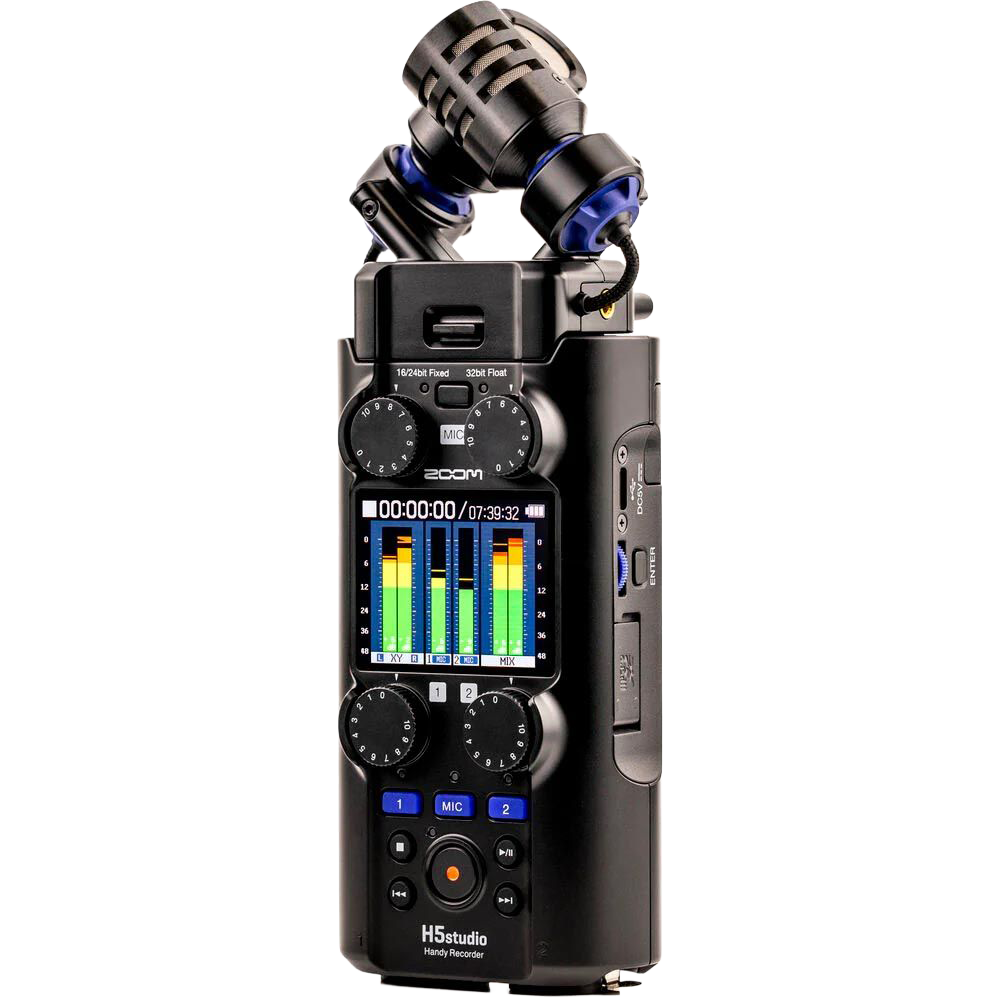
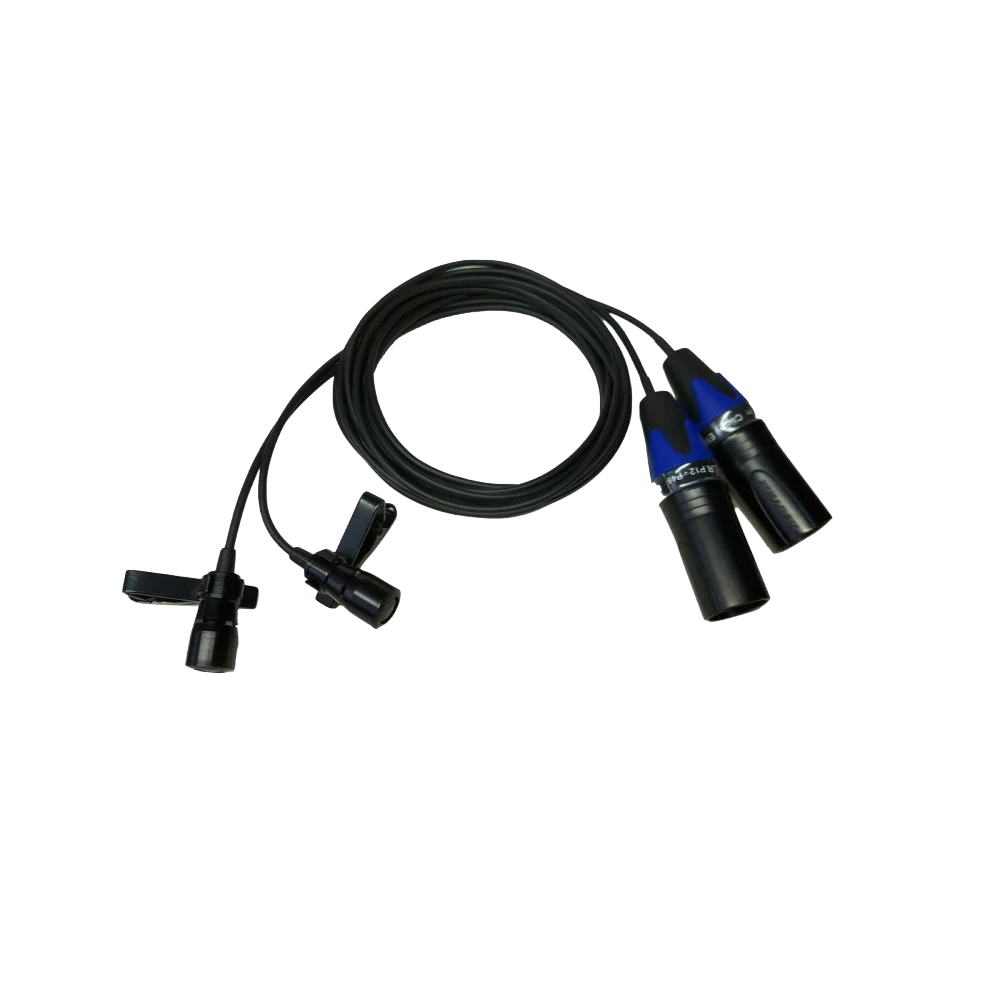
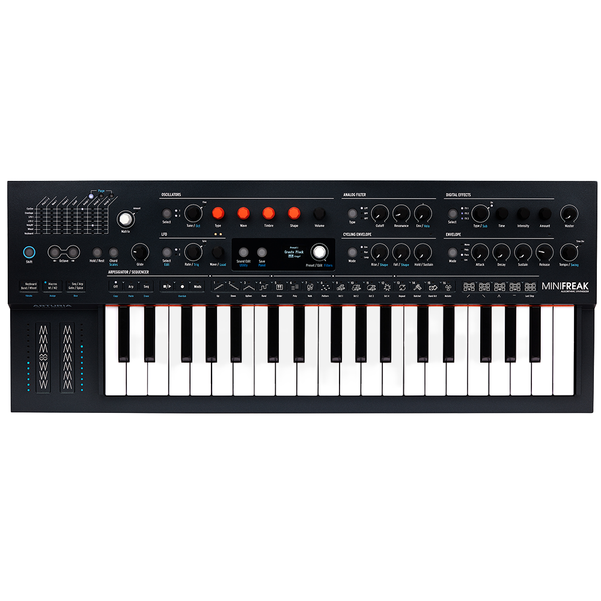
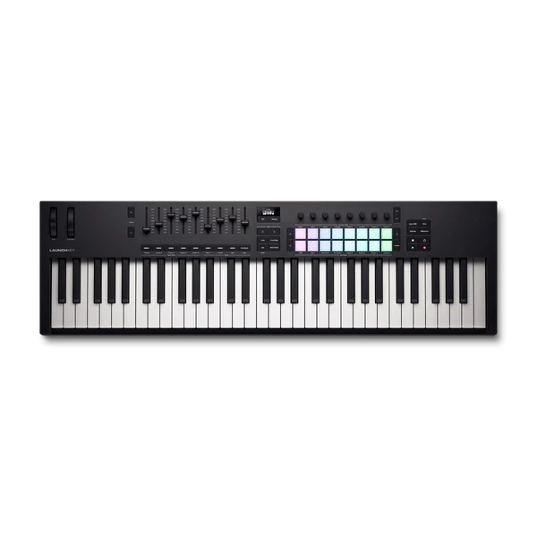

Ambient music · Field recordings
Docility
Ambient music made from field recordings of rain, birdsong and water.
About the music

Docility is ambient music made from field recordings. Most tracks start with sounds captured outdoors, recorded on Zoom recorders utilising RØDE mics. Utilising gentle drones, soft pads and excessive reverb.
Albums
Click a sleeve to view details and listen.
EPs
Click a sleeve to view details and listen.
On my turntable
Twenty-five albums, artists and tracks on my mind right now. Tap any cover to go and listen.
The scenery
The places behind the sound — and the source of every album cover. Tap a photo to enlarge.
Tools
All the gear I use in my music production.

Ableton Live 12
Field Recording Equipment

RØDE NTG2
A great piece of kit for isolating sounds and recording vocal samples.

Zoom H5studio
My second Zoom recorder, following on from the trust H4n Pro.

Clippys
A pair of mics used for more quality stereo recording.
Studio Gear

Arturia MiniFreak
My new toy for exploring the power of synthesisers.

Novation Launchkey Mk4 61
A powerhouse MIDI keyboard.